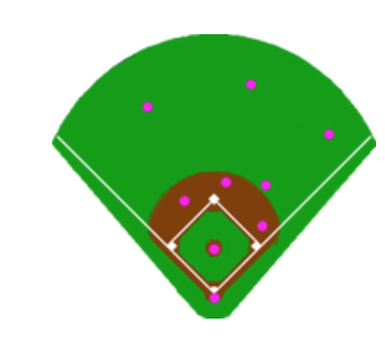
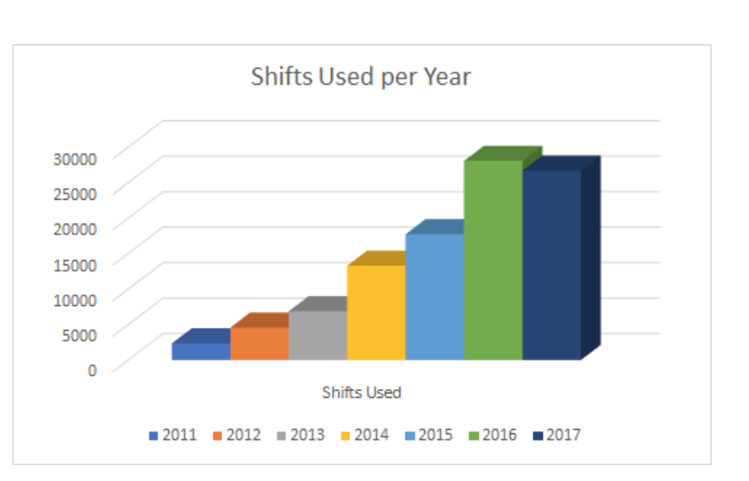
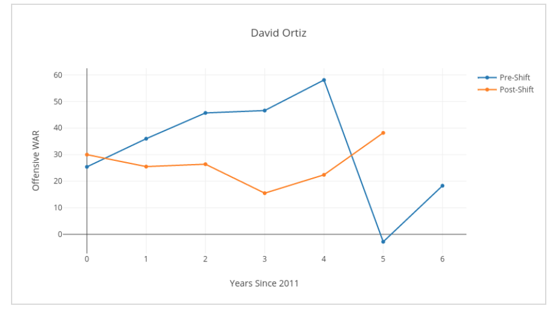
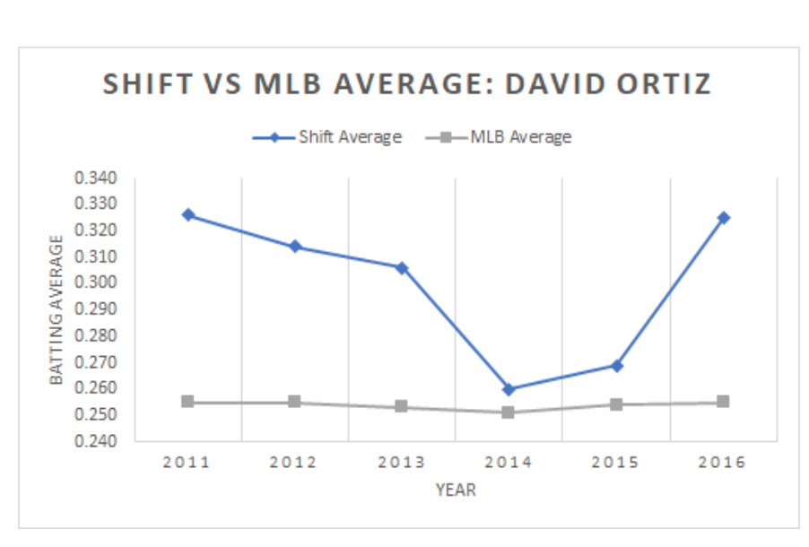

Impact of Defensive Shifts
By Arin Tydoki | November 6, 2017

Any fan of baseball can see that the game is changing in a drastic way. Home-runs are being hit like never before, rookie sensations seem to spring onto the scene every few months, and the amount of defensive shifts employed in the game is greater than ever before. What started this trend of adjusted defensive strategies? Moving infielders and outfielders to optimally position them to record an out is an ingenious idea that seems new to many people around the sport. However, it didn’t start as recently as many think. There have been reports of defensiveshifts dating back all the way to 1877, some notably applied to the greats such as Ted Williams and Cy Williams. The hot point of debated comes from the recent spike in shift usage, from 2,357 shifts used in 2011, to 26,700 shifts used in 2017. So, are these defensive mechanisms that have been so popular in the modern game worth all of the extra scouting and analysis? How much do they really affect the hitters yearly performances, and ultimately, how much do shifts affect a team’s chances to win?
 Let’s lay out the basic information: a shift occurs when one side of the field is defensively favored by a team. In the modern game, this takes place most often by placing 3 infielders on one side of the infield, as seen on the left. This is known as a “traditional shift,” and has been plaguing pull-hitters for years. Let’s take a look at one of the most shifted against players since the major implementation of the shift, David Ortiz. In order to do this, we will compare his Offensive WAR (Wins-Above-Replacement) in the years of his career before and after 2011 (min. 500 PA). There is an obvious decline in Offensive WAR post-shift, suggesting that shifts may have had an impact on his success. However, looking at David Ortiz’s batting average against the shift and comparing it the league batting average overall, he was hitting well above league average. So what is the correlation? There are many extraneous factors that can be taken into account such as age, injuries, or opponents pitching performances, however, it does not appear that the shift had a perverse effect on the most shifted against player in baseball. In fact, the entire league hit for higher batting averages against the shift, for example, .299 against the shift vs. hitting .255 overall in 2016. Maybe the shift isn’t as effective as people give it credit for after all.
 Next, let’s look at how applying shifts affects the winning percentages of the teams who use them the most. This year, the Chicago Cubs and The Milwaukee Brewers used shifts the least and most, respectively. Both had above average seasons, the Cubs having 92 wins (.568 Win%) and the Brewers having 86 wins (.531 Win%). The win percentages of these teams alone suggests that the frequency of use of shifts does not have a major effect on the outcome of team’s seasons. However, if we compare the average runs created by a player on the Brewers and the Cubs, we see that the average Brewers player was less effective. This means that shifts contributed to the Brewers having a comparable season to the Chicago Cubs, despite being an overall worse team.
All of these numbers call into question whether or not teams shifting actually affect player and team’s performances. However, using David Ortiz, the Brewers and Cubs as examples, it can be seen that shifts have the potential to benefit a team significantly, but do not define performance.